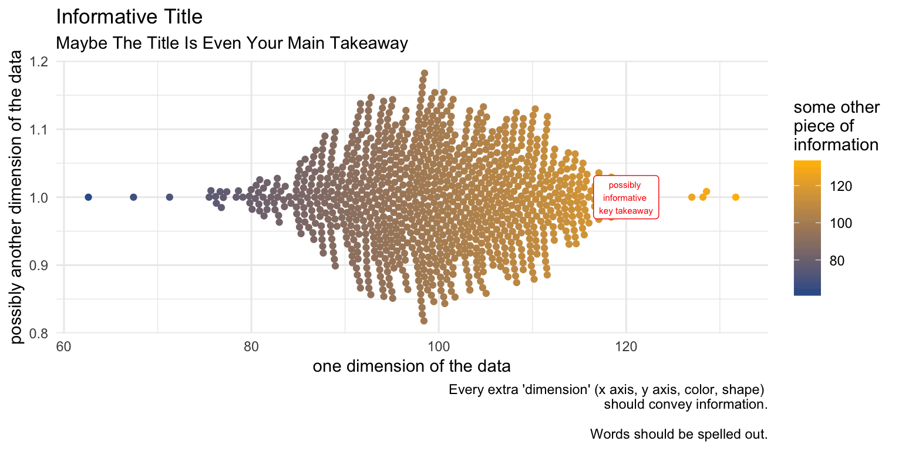

possible visualizations
hypothetical questionnaire
A data set is nothing more than a series of rows and columns that contain answers to responses to a survey.
| person | Q1 | Q2 | Q3 |
|---|---|---|---|
| 1 | 1 | 0 | 100 |
| 2 | 2 | 0 | 200 |
| 3 | 1 | 1 | -9 |
Once we have discerned the type of variable that have, there are two followup questions we may ask before deciding upon a chart strategy:

This example uses simulated data on social work clients, of the kind that a social service agency might collect.
| age | mental_health | group | neighborhood |
|---|---|---|---|
| 31.69 | 118.6 | Group A | Neighborhood A |
| 33.68 | 124.7 | Group A | Neighborhood C |
| 47.95 | 108.6 | Group A | Neighborhood B |
| 37.1 | 94.97 | Group A | Neighborhood B |
| 53.09 | 93.19 | Group A | Neighborhood C |
We start by visualizing one indicator at a time.
Sometimes the most interesting visualizations, are visualizations that give us a sense of the maximum, minimum, and average values. For example, the histogram and beeswarm plot display information on age.
Histogram and Beeswarm Plot
We would use a slightly different visualization, for example, a barchart, when our data are grouped into categories.
Barchart
Our task becomes somewhat more complicated when we want to understand the relationship of one thing to another thing.
Here, for example, we visualize two categorical variables, neighborhood, by group. In this graph, the height of the bars represents the count of observations.
Barchart
Here, we visualize two continuous variables, mental health, by age.
Scatterplot
Last, we visualize a continuous variable by a categorical variable, mental health, by group. In this graph, the height of the bars represents the mean score.
BarChart
Sometimes our task is different. We want to visualize information, but add information on spatial location, using a map.
Map
Graphics made with the ggplot2 graphing library created by Hadley Wickham.
Variables & Visualization by Andrew Grogan-Kaylor is licensed under a Creative Commons Attribution-ShareAlike 4.0 International License. You are welcome to download and use this handout in your own classes, or work, as long as the handout remains properly attributed.
Last updated: June 27 2019 at 10:10